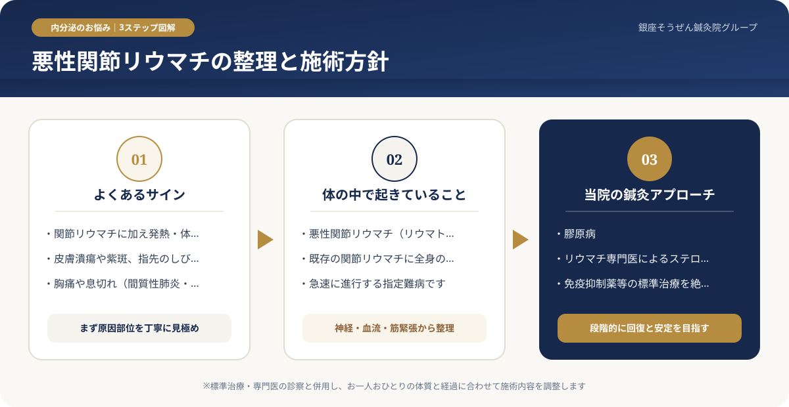
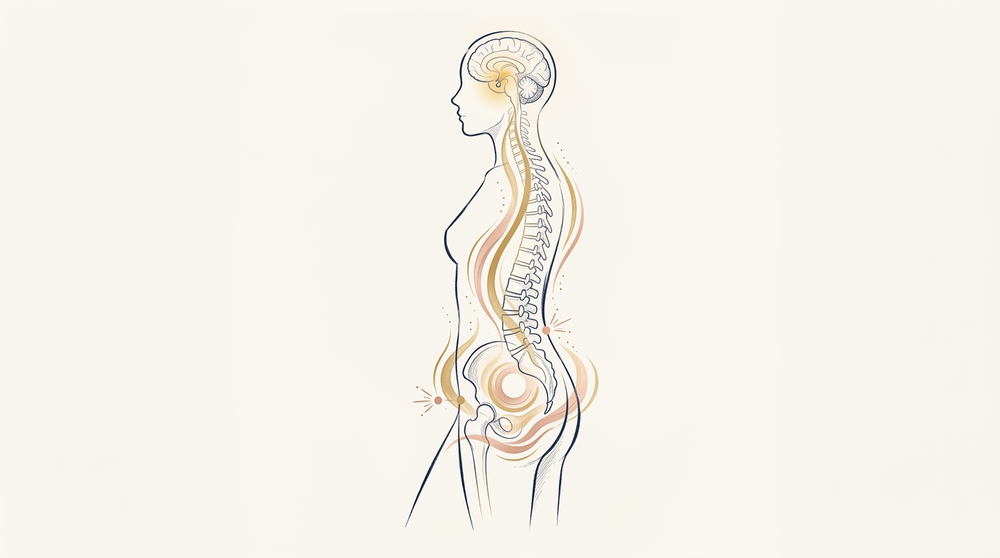

悪性関節リウマチの鍼灸
関節リウマチに全身の血管炎や臓器症状を伴う指定難病。専門医の免疫抑制療法を最優先とし、急性期は対象外・安定期の許可下のみ穏やかにケアします。
まず知っておきたい要点と改善の流れ

悪性関節リウマチ（リウマトイド血管炎）は、既存の関節リウマチに全身の中小血管の炎症（血管炎）などの関節外症状を合併し、急速に進行する指定難病です。明確な原因は未解明ですが遺伝因子（HLA-DR4等）の関与が指摘され、高熱、体重減少、皮膚潰瘍、四肢先端の壊死、多発単神経炎、間質性肺炎や心・腎合併症を起こし得るため、専門医によるステロイド・免疫抑制薬・血漿交換などの迅速な標準治療が必須です。
このようなお悩みはありませんか？
- ✓関節リウマチに加え発熱・体重減少・強い倦怠感がある
- ✓皮膚潰瘍や紫斑、指先のしびれ・麻痺（多発単神経炎）が出た
- ✓胸痛や息切れ（間質性肺炎・心膜炎）など臓器症状が心配
- ✓寛解維持中のステロイド・免疫抑制薬治療と体調管理に悩んでいる
当院の施術アプローチ・改善の流れ
なぜ鍼灸で改善へ向かうのか？（作用機序の図解）
悪性関節リウマチに対する鍼灸は、神経-内分泌-免疫ネットワークと末梢循環の調整機序を通じて、お体本来の回復力を引き出します。

内科専門医の薬物・食事管理を前提に、足三里・三陰交・背部経穴へ安全にアプローチします。
ストレス由来の交感神経過緊張を鎮め、ホルモン分泌や血糖・尿酸管理を乱す疲労要因を軽減します。
手足や内臓の血流を促し、合併しやすいしびれ・胃もたれ・倦怠感・関節痛の負担を和らげます。
皮膚衛生や低刺激を徹底し、日々の生活習慣改善を続けやすい安定した体調づくりを支えます。
院長YouTube解説・関連動画
公開日：２０２１年 ８月２３日
更新日：２０２１年 ９月１０日
本日は悪性関節リウマチについて解説させていただきます。
☆本記事の内容
- •悪性関節リウマチとは
- •悪性関節リウマチの原因
- •悪性関節リウマチの症状
- •悪性関節リウマチの改善方法
- •悪性関節リウマチのまとめ
- •悪性関節リウマチは関節リウマチに血管炎などの関節以外の症状がある
- •原因には体質や遺伝が関係しているのではないかと言われている
- •悪性関節リウマチでは、全身の血管炎によって様々な症状が現れる
- •改善するためには、できるだけ早くリウマチによる炎症を取り除く
- •悪性関節リウマチは、最悪の場合死に至ることもある
銀座そうぜん鍼灸院の宗前です。
このページを書いている私は、鍼灸師として１３年、担当した利用者様数８０，０００人を誇り、病気の休職者３００人を社会復帰できるまで回復させてきた実績があります。
🎥 他のYouTube切り抜き・解説を読む（あと1件）▼
悪性関節リウマチは関節リウマチに血管炎などの関節以外の症状がある
悪性関節リウマチは元々持っている関節リウマチに血管炎などの関節以外の症状があり、改善の見込みがなかったり症状が重かったりする場合に判断される病気です。
関節リウマチの人の中の約0.6％の人が悪性関節リウマチであると言われています。
悪性関節リウマチが1番多い年齢は60代で、関節リウマチを発症する年代より少し高齢で発症することが多く、関節リウマチよりも男性の割合が多い傾向があると言われています。
悪性関節リウマチでは、全身の血管炎によって様々な症状が現れる
悪性関節リウマチでは、関節リウマチによって起きる色々な関節の炎症と合わせて発熱や体重の減少が現れます。
悪性関節リウマチでは、全身の血管炎によって様々な症状が現れます。全身の血管炎によって現れる症状は非常に早いスピードで現れることが特徴です。
他にも、皮膚の潰瘍や梗塞、四肢先端の壊死などの症状が現れることもあります。血液を調べた場合は、リウマトイド因子の値が高かったり、血清補体価の値が低かったり、免疫複合体の値が高かったりすることが多いです。
悪性関節リウマチを改善するためには、できるだけ早くリウマチによる炎症を取り除くことが大切です。
悪性関節リウマチでは薬を使って炎症を取り除いていきます。使われる薬は、副腎皮質ステロイドやメトトレキサートなどの抗リウマチ薬や生物学的製剤、免疫抑制剤や抗凝固剤などがあります。
場合によっては血漿を交換する方法で改善を行うこともあります。悪性関節リウマチの改善を行なっていく時には、関節機能不全の進み具合に注意して改善を行うことも大切です。
どのような薬や方法で改善を行うのかについては、現れている症状や症状の程度によって個人差があります。個人に合わせた改善方法で改善を行うことも悪性関節リウマチを改善するためには非常に大切なことです。
悪性関節リウマチは、最悪の場合死に至ることもあります。死に至る原因で最も多い原因は呼吸不全です。他にも、感染症の合併や心不全、腎不全などが原因で死に至る危険があります。
関節リウマチについての改善が進んできていることによって、悪性関節リウマチが起きる割合は減ってきています。
関節リウマチを発症した場合は、関節リウマチをきちんと改善することが悪性関節リウマチを発症しないためにも非常に大切なのです。
関節リウマチ・膠原病の全身免疫・関節ケアツボ図解
実際の施術ではお一人おひとりの体質・症状に合わせて選穴しますが、関節リウマチ・膠原病・自己免疫疾患の標準治療併用サポートの臨床でよく用いられる代表的なツボの目安です。

📌 代表的なツボの詳細一覧表を開く（6穴） ▼
| ツボ名 | 位置の目安 | 主な狙い | セルフケアの注意点 |
|---|---|---|---|
| 曲池（きょくち） | 肘を曲げた外側のシワの先端 | 全身の炎症バランス・上肢のこわばり緩和 | 腫れや熱感が強い関節自体は避け周囲から調整します。 |
| 外関（がいかん） | 手の甲側、手首から指3本分肘寄り | 手首・手指のこわばりや朝の動かしにくさ補助 | 無理に関節を動かさず穏やかに刺激します。 |
| 合谷（ごうこく） | 手の甲、親指と人差し指の間 | 下行性疼痛抑制系の活性化・痛みの波の緩和 | ステロイド・免疫抑制薬使用中は皮膚保護を最優先します。 |
| 足三里（あしさんり） | 膝の下外側、指4本分下 | 胃腸保護・全身の免疫自律神経バランス調整 | 体力の消耗を防ぐ穏やかな刺激にします。 |
| 陰陵泉（いんりょうせん） | すねの内側、膝下のくぼみ | 関節のむくみ・重だるさ・水分代謝サポート | 骨の際を優しくさする程度にします。 |
| 太渓（たいけい） | 内くるぶしとアキレス腱の間 | 冷え・慢性疲労・下肢関節の循環サポート | 温めと組み合わせるとこわばりが緩みやすくなります。 |
国際査読論文の科学的エビデンス
国際的な医学データベース（PubMed・Cochrane等）で報告されている関節リウマチ・膠原病・自己免疫疾患の標準治療併用サポート領域の代表的な査読済み鍼灸研究をまとめています（標準治療との併用や研究上の限界を含めて正確に掲載）。
📚 査読論文データ・PubMed出典リンクを開く（4件） ▼
| 年・研究デザイン | 対象・規模 | 主な結果 | 限界・出典 |
|---|---|---|---|
| 2026年 メタ解析 | 2型糖尿病 20 RCTs（n=1,479） | 空腹時血糖（SMD -0.52, p=0.009）、HbA1c（SMD -0.76, p=0.002）、HOMA-IR（p<0.0001）を有意低減。 | 将来研究のばらつき懸念。食事・運動・薬物療法の継続必須。 Postgrad Med J (PMID: 41052150) |
| 2025年 メタ解析 | 糖尿病性末梢神経障害（DPN）14 RCTs（n=1,169） | 偽鍼比でVAS疼痛-1.44cm、神経症状スコアTCSSも有意改善（WMD -1.22）。 | GRADE確実性は低い。足部の熱傷・感染予防に細心の注意。 Curr Pain Headache Rep (PMID: 40220243) |
| 2024年 メタ解析 | 橋本病（慢性甲状腺炎）14 RCTs（n=1,020） | レボチロキシン単独比でTPOAb・TGAb低下およびTSH・FT3・FT4の調整を示唆（p<0.00001）。 | 中国国内RCT中心・盲検化不足。甲状腺薬の自己中断は厳禁。 Medicine (PMID: 38428856) |
| 2024年 メタ解析 | 単純性肥満 25 RCTs（n=2,018・生活習慣併用） | 生活習慣単独比で体重-4.73・BMI -2.11・腹囲-4.96（p<0.00001）、中性脂肪・LDLも有意改善。 | 介入期間・方法の異質性高、長期リバウンド防止は要検証。 Diabetes Metab Syndr Obes (PMID: 39582784) |
参考文献・出典
- 2026年 メタ解析（2型糖尿病 20 RCTs（n=1,479））— Postgrad Med J (PMID: 41052150)
- 2025年 メタ解析（糖尿病性末梢神経障害（DPN）14 RCTs（n=1,169））— Curr Pain Headache Rep (PMID: 40220243)
- 2024年 メタ解析（橋本病（慢性甲状腺炎）14 RCTs（n=1,020））— Medicine (PMID: 38428856)
- 2024年 メタ解析（単純性肥満 25 RCTs（n=2,018・生活習慣併用））— Diabetes Metab Syndr Obes (PMID: 39582784)
よくある質問（FAQ）
Q. 皮膚潰瘍やしびれが出ているときに鍼灸を受けてもよいですか？▼
Q. 治療で落ち着いた後に通院を検討する条件はありますか？▼
あわせて読まれる関連疾患（内分泌のお悩み）
異常蛋白質アミロイドが心臓・腎臓・神経等の臓器に沈着する指定難病群。専門医の病型別標準治療を最優先し、安定期の許可下のみ穏やかにケアします。
遺伝子変異により全身に繰り返す炎症を起こす希少難病群です。専門医治療を最優先に、安定期の冷え対策や穏やかな自律神経ケアを支えます。
副腎や性腺のステロイドホルモン合成が障害される先天性疾患です。副腎クリーゼ予防とホルモン補充を最優先に、安定期の穏やかなケアを支えます。
コルチゾール過剰により中心性肥満や満月様顔貌、高血圧等を呈する内分泌疾患。専門医の治療を最優先に安定期のみ補完ケアを行います。
肺動脈に血栓が詰まり肺動脈圧が上昇する指定難病。専門医の抗凝固療法・手術等を最優先とし、安定期の許可下でのみ穏やかにケアします。
ACTHへの副腎の反応が障害されコルチゾールが不足する先天性指定難病。生涯のホルモン補充と副腎クリーゼ予防を最優先に安定期を支えます。
CLINICAL RECOVERY CASES
✨ 実際の臨床改善事例・回復経過を見る
銀座本院をはじめ各院での実際の改善事例を症状別に絞り込んでご確認いただけます。
おひとりで悩まず、まずはご相談ください
銀座本院・川口・大宮・横浜・博多・田無の各院でご予約を承っております。